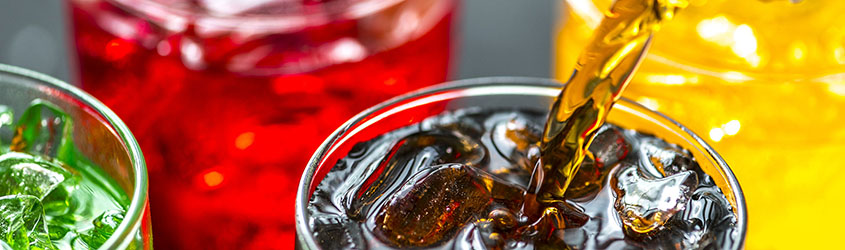
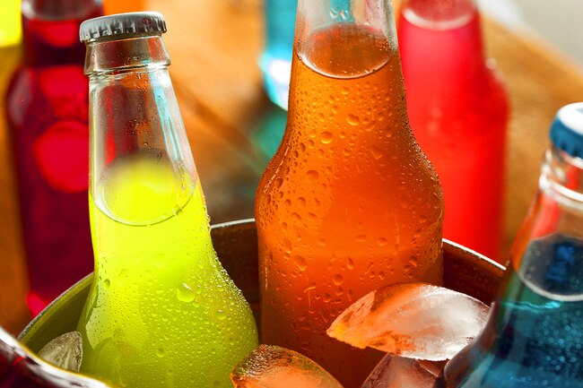
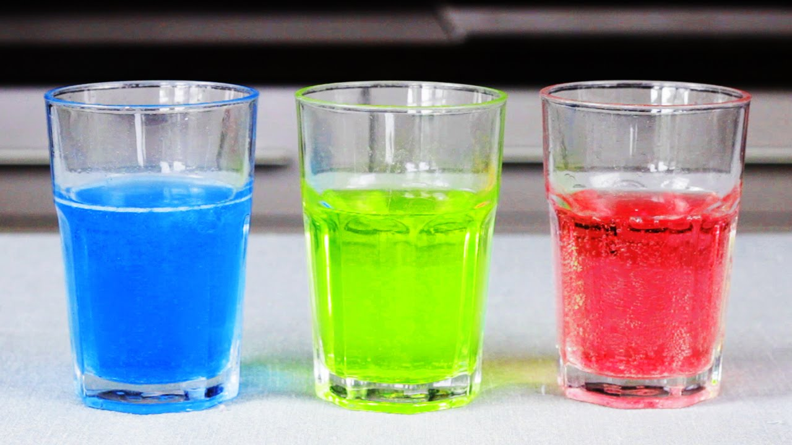

Ice in drinks: Yes or No?

Why should fast food chains and restaurants should put ice in their drinks?
- It keeps the drink cold.
- A study has found that colder drinks satisfy our thirst more than warm or room tempature drinks.
- You don't have to worry about finishing your drink before it gets hot.

Why fast food chains and restaurants shouldn't put ice in their drinks?

- Ice waters down drinks.
- Bacteria!!
Studies show that ice machines are the least priority when it comes to cleaning.Due to this the ice in drinks has been on of the biggest ways to catch a disease from unfiltered water.
- The lack of ice creates more room for the drink making it more worth your money since they're so expensive no in days.
